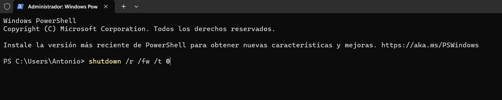
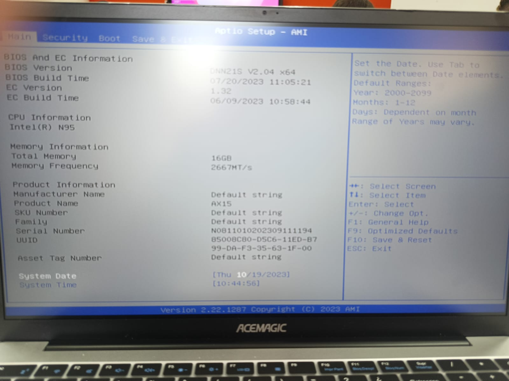
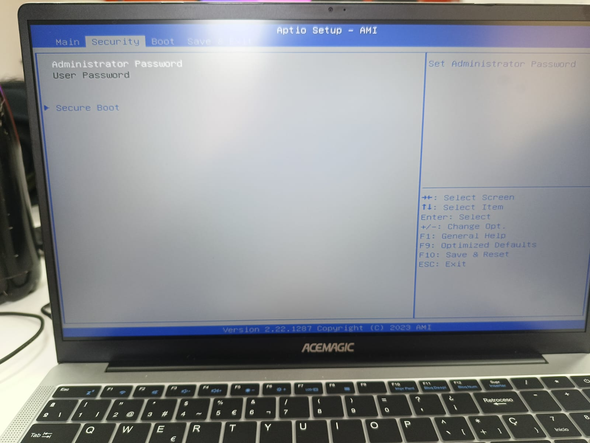
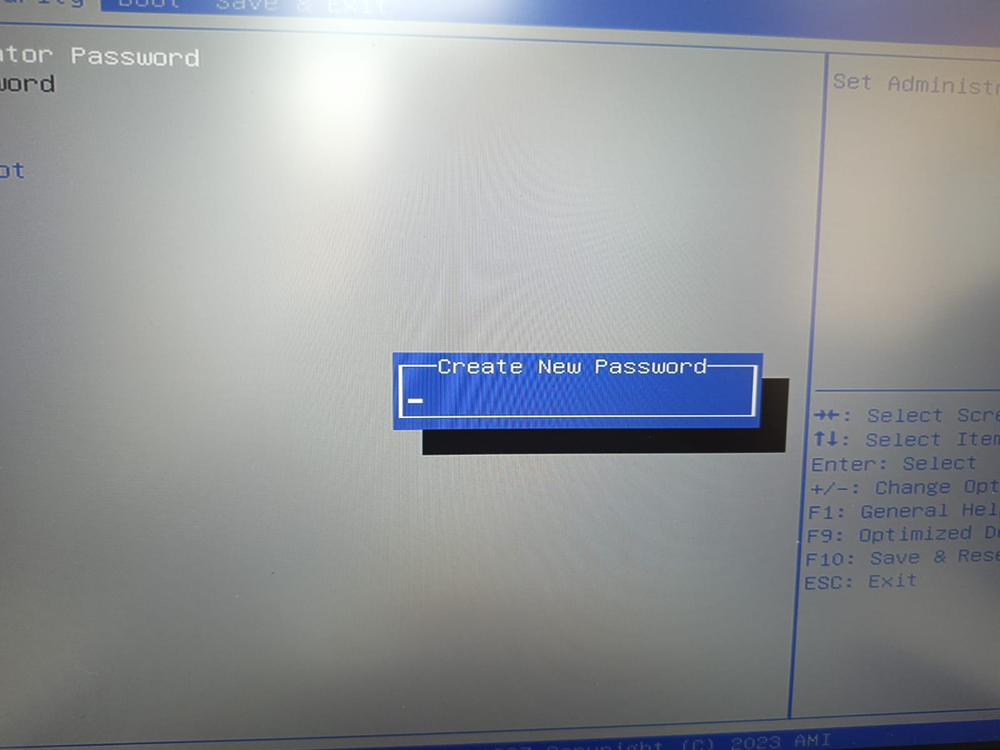
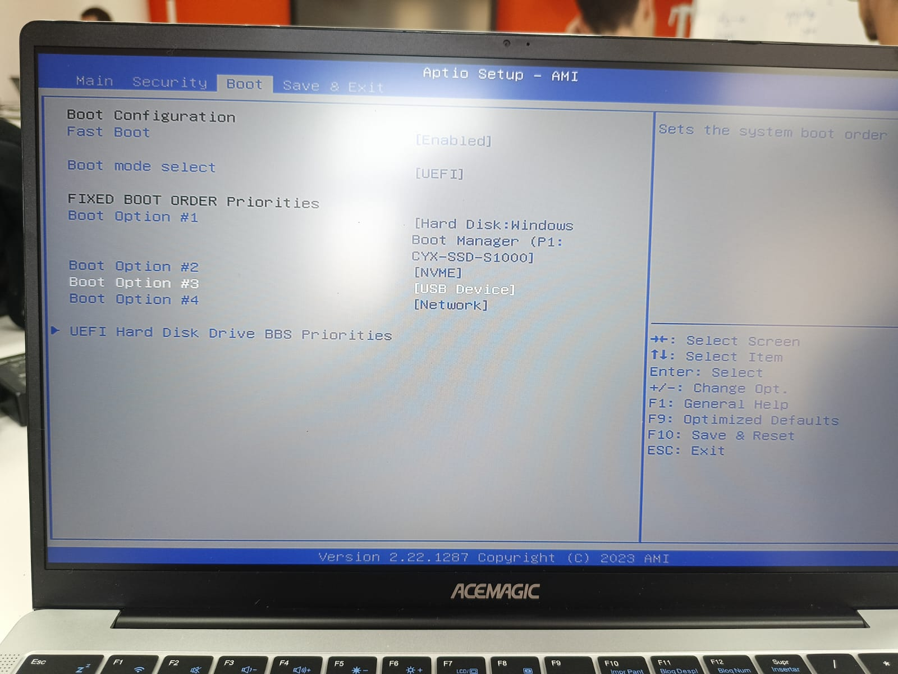
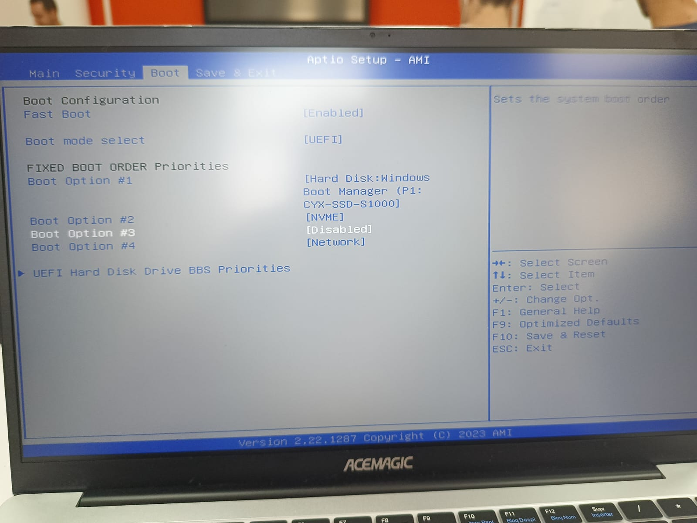

En la era digital actual, la ciberseguridad se ha convertido en una preocupación fundamental para individuos y organizaciones por igual. La creciente sofisticación de las amenazas cibernéticas exige una atención meticulosa a la seguridad de los sistemas informáticos.
Este trabajo proporcionará una guía detallada sobre cómo establecer parámetros en la BIOS de Windows 11 con el fin de crear un bastión sólido de ciberseguridad. La seguridad cibernética es un desafío constante y en constante evolución, y esta investigación busca proporcionar a los usuarios de Windows 11 las herramientas y el conocimiento necesarios para proteger sus sistemas de manera efectiva en un entorno digital cada vez más amenazante.
El primer paso es entrar en la BIOS de nuestro equipo, para esta forma podemos hacerlo de varias formas.
Una de ellas es cuando el equipo se esta iniciando pulsar una serie de teclas que cambiaran en funcion de nuestra placa base, normalmente suelen ser F2,F10,F12, Supr, Del.
En este caso vamos a entrar en BIOS con un comando en PowerShell como administrador.
Comando —> shutdown /r /fw /t 0

Una vez ejecutado el comando nos reiniciara el ordenador y nos accedera automaticamente a la BIOS.

En este punto iremos a la pestaña de seguridad.
Alli podremos poner contraseña de administrador y una vez puesta nos dara la opcion a poner contraseña de usuario o Power On.


Ahora entramos en la pestaña Boot y modificamos unos cuantos parametros.

Ahora tocaremos tanto el orden de arranque como deshabilitaremos los arranques externos que no necesistemos.
En nuestro caso hemos considerado dejar el arranque por red, pero se podria quitar perfectamente y no tendriamos ningun problema.

Como podemos ver hemos deshabilitado el arranque por dispositivos USB y el orden de arranque viene por defecto en el orden mas optimo hablando de ciberseguridad asi que no tendremos que tocar nada.
Pero para cambiar estos parametros, tendremos que poner en la opcin Boot Option #1, nuestro dispositivo HDD o SSD.